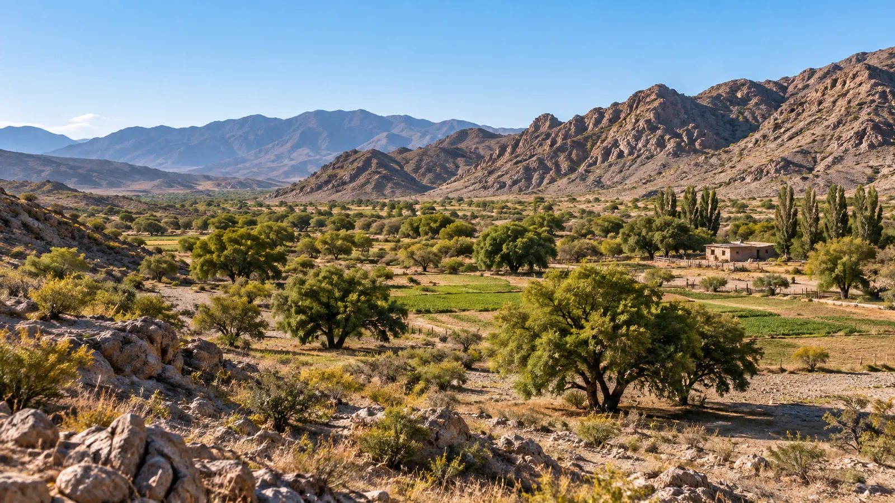
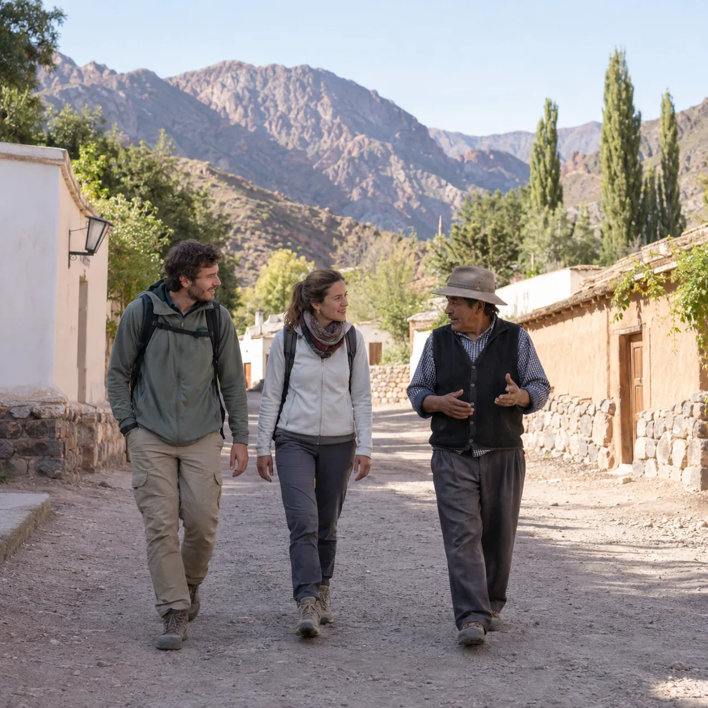

Turismo aventura y comunitario
Reservá experiencias en Astica y Valle Fértil
Trekking, cabalgatas, talleres con artesanos y mesas de campo con quienes viven el valle. Pagá online o escribile directo a cada prestador.
Red de prestadoresAstica · San Juan

Experiencia destacada
Caminos de Astica
Trekking, historia local y vida rural
Recorré el pueblo y sus senderos con un vecino que conoce cada acequia, cada finca de cítricos y cada historia. Una caminata tranquila para entender cómo se vive en el valle.
- 3 horas
- Hasta 10 personas
- $18.000 por persona
Elegí qué querés vivir en el valle
Cada experiencia la ofrece un prestador de la red y la revisa Samay Yampa antes de publicarla.
El valle en fotos
Paisajes, oficios y sabores de Astica y Valle Fértil. Tocá una foto para verla grande.
Prestadores del vallerevisados por la red
La red Samay Yampa
Una red de prestadores del valle, en una sola plataforma
Samay Yampa es el Núcleo Territorial de Turismo de Astica, impulsado por Mariana Aguilera: un espacio de atención al visitante, esta plataforma y una red de guías, artesanos, productores y emprendedores locales.
Cada reserva deja trabajo en el valle: en el guía, la artesana, la familia que cocina y quien abre su casa.
-
01
Quien visita elige y reserva
Reservá y pagá online, o escribile directo al prestador por WhatsApp. Lo que te quede más cómodo.
-
02
Cada prestador maneja su oferta
Con su propio acceso carga experiencias, fotos, fechas y precios, y ve sus reservas.
-
03
La red revisa y aprueba
Cada publicación pasa por la supervisión de Samay Yampa antes de salir, para cuidar la calidad y la identidad del valle.
-
04
El cobro va al prestador
Cada uno cobra sus reservas y la plataforma retiene su porcentaje de forma automática.
Núcleo Territorial de Turismo
Planificá tu visita a Astica con quienes viven el valle
Te orientamos para elegir experiencias, combinar prestadores y organizar tus días en Valle Fértil, camino a San Agustín e Ischigualasto.
- +54 9 264 477-4978
- Astica, Valle Fértil, San Juan · dirección del espacio a confirmar